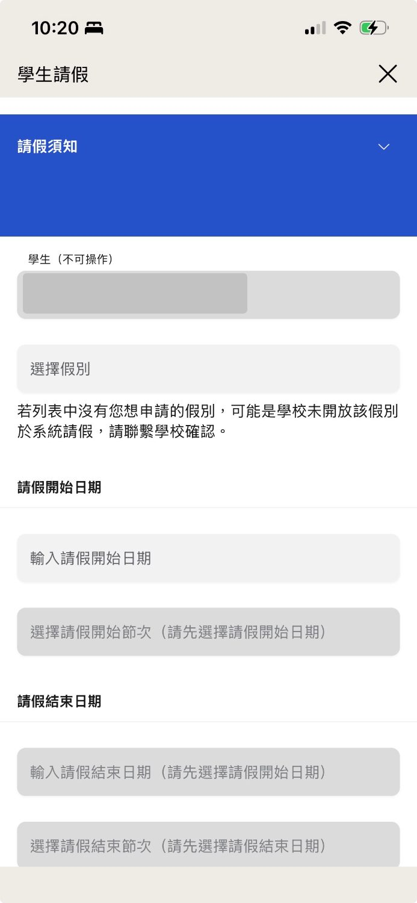
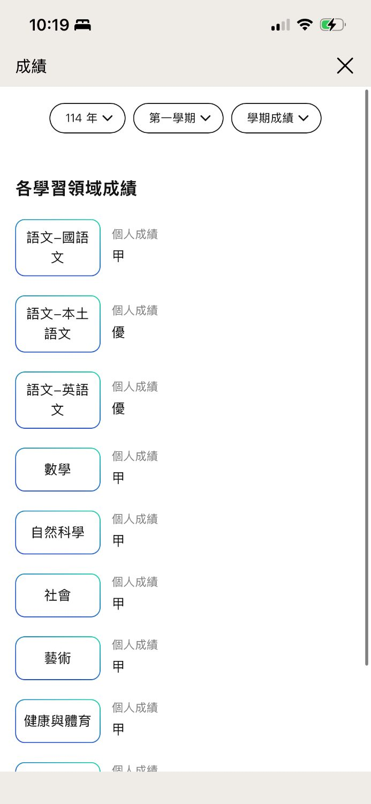
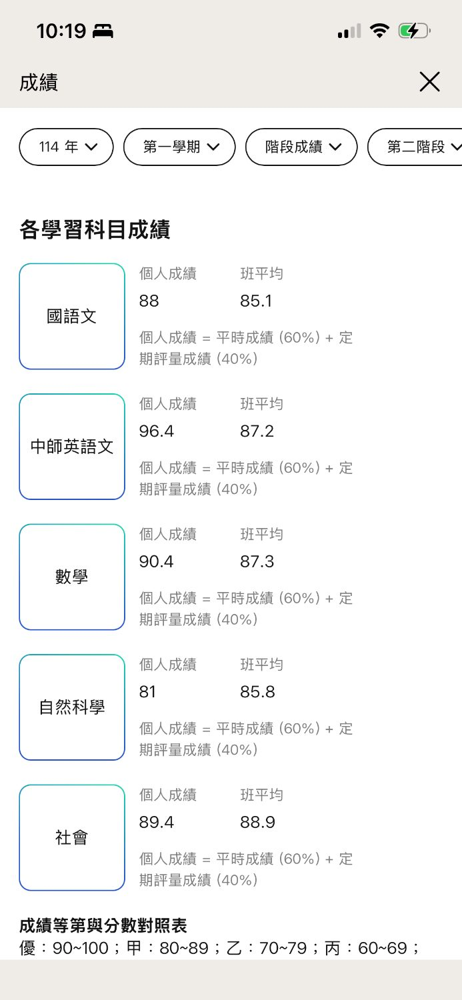
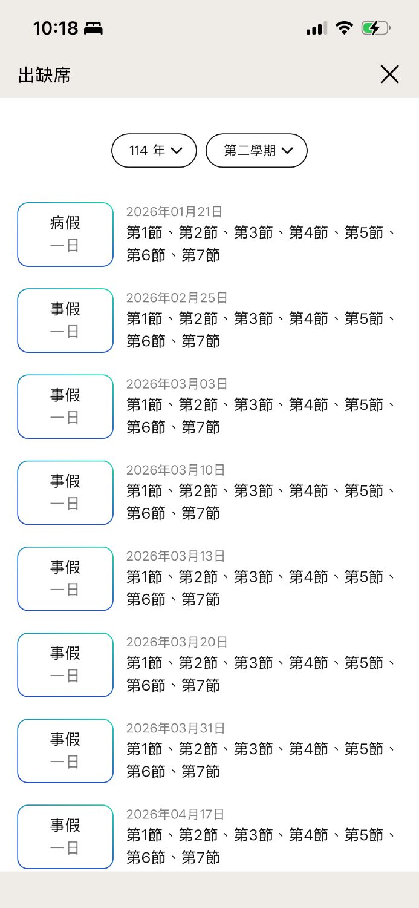

打造好玩、會學、讓人安心的智慧校園
澔學學習 × 睿思實驗教育機構｜董事會暨教師說明會
從走進校門到放學回家，一個 App 陪伴孩子的每個時刻
讓學生愛學習、老師好教學、家長能安心
這個部分規劃了三項服務
老師一鍵給點，孩子的好表現馬上被看見
從班級日常到全校榮譽，都能用點數鼓勵
掃 QR Code 出任務，校園處處是學習現場
一套工具，從開學到校外教學都用得上
讀完一本書，掃 ISBN 就能答題認證
基礎四項服務規劃
點名、請假、成績、缺曠由思騰校務系統提供，1Campus 已將帳號權限串好
思騰的點名、請假、成績、缺曠，打開 App 就能用
拿起手機，直接進入思騰點名
家長在 App 送假單，導師在 App 審核

家長隨時查，老師會談前一次掌握

學期成績
評量成績
出缺席誰讀了、誰還沒讀，一張表看清楚
這個部分規劃了三項服務
到校、離校即時通知，家長更安心
家長問了就有答案，行政不必重複回覆
同一個 App，服務依學校特質量身規劃
約三個月，從建置到穩定使用
25 年校園資訊服務，七個縣市、三百所學校的選擇
和睿思一起打造好玩、會學、讓人安心的智慧校園
感謝聆聽｜澔學學習 1Campus